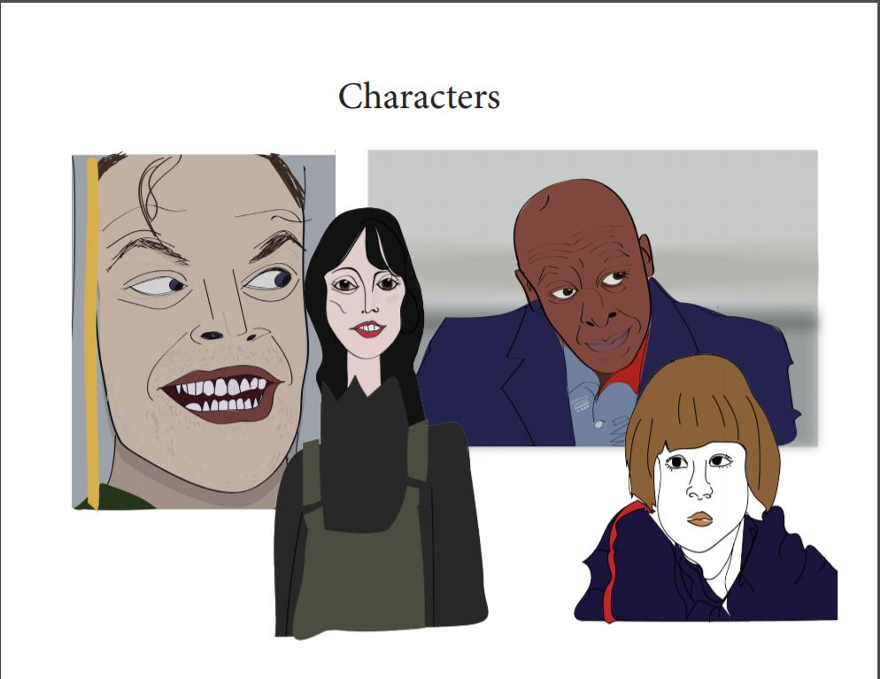

This was just a begining of a very long project, I know that it was just one week long, but for my group it was special, because we learned that we cannot always rely on other group members. One of our group members fell sick and went to the hospital. She was one of the main poeple who was assigned for coding our project.
Besides that, we chose movie The Shining, and we loved it. The style of the movie was so aestetically pleasing and it was very easy to work with my group.
I used graphic tablet for the first time to draw characters in Illustrator. I learned how to use the Illustarator in another way. Before that I learned how to use it for vector art, but in this project I learned how to actually draw by hand, not using premade shapes.
